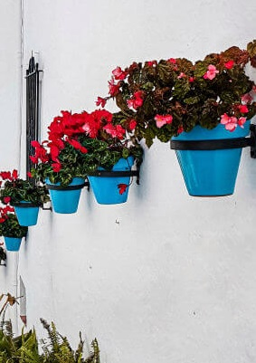

Costa del sol Costa de Golf
Bañada por el mar Mediterráneo, la Costa del Sol abarca más de 150 kilómetros de litoral con una media de 325 días de sol al año
Más información


Málaga milenaria y cosmopolita en el pasado, conserva intactas sus raíces históricas. Si en tiempos remotos fue testigo de los orígenes del hombre y de la cultura mediterránea, hoy convertida en primera potencia de la industria turística andaluza, mantiene viva su tradición de tierra acogedora y creativa.
Málaga marinera en su litoral donde nunca es invierno; de vocación serrana, tierra adentro, donde la naturaleza se muestra en todo su esplendor. Pueblos blancos de hermosa arquitectura, envueltos en románticas leyendas, ponen su punto de luz en los recónditos valles donde la vida discurre plácidamente. Y desde la alta sierra la mirada abarca el horizonte hasta perderse en la inmensidad azul del mar.
Sergio Martínez Félix
Bañada por el mar Mediterráneo, la Costa del Sol abarca más de 150 kilómetros de litoral con una media de 325 días de sol al año
Más información
| Day | Málaga | Ronda | Marbella | Nerja | Benalmadena |
|---|---|---|---|---|---|
| Primera parada | Pasear por el centro histórico de Málaga | Paseo por la Plaza de la Merced y Alameda del Tajo | Pasea y visita las exclusivas tiendas de Puerto Banús | Disfruta de las vistas del Balcón de Europa | Visita el castillo de Colomares |
| Segunda parada | Subir al Castillo de Gibralfaro en Málaga | Puente Viejo | No te pierdas el casco antiguo de Marbella. | Enamorarte del centro de Nerja | Conoce el mariposario y el templo budista |
| Tercera parada | Teatro romano y Alcazaba | Jardines de Cuenca o de la Mina | Disfruta de una buena paella | * Visita las Cuevas de Nerja | Visita el Castillo Pil Pil y tapea en la playa |
| Cuarta parada | * Catedral de Málaga | Visita a Setenil de las Bodegas | Consigue un bronceado magnífico en Bounty Beach. | No olvides visitar Frigiliana | Toma algo en Puerto Marina |
| Quinta parada | * Museos de Málaga | Visita a Juzcar | De compras a la Cañada | Disfruta de la puesta de sol | Disfruta del ocio nocturno de la Costa del Sol |
* Reserva anticipada recomendada